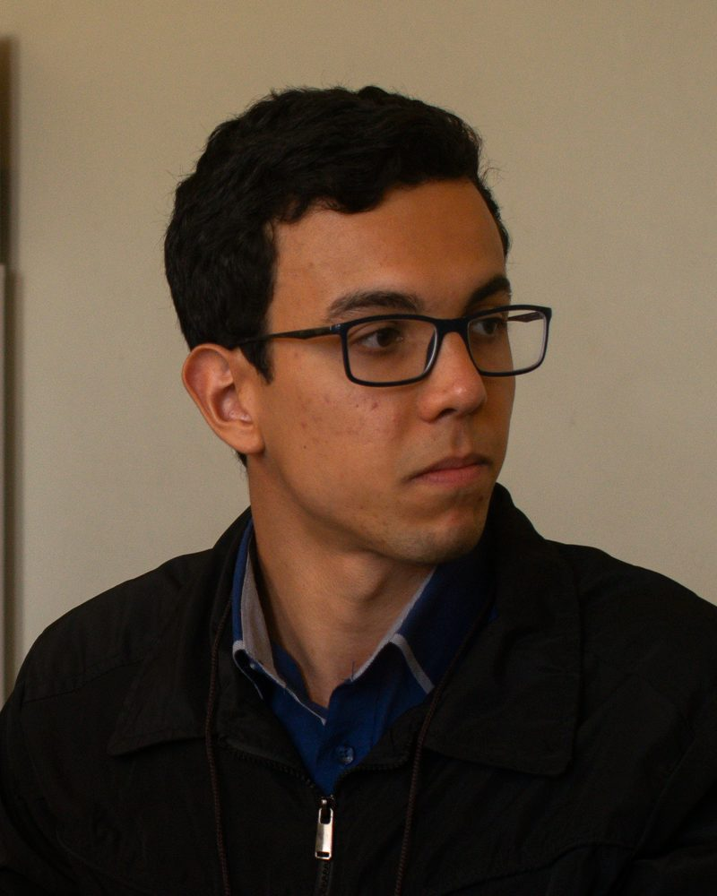
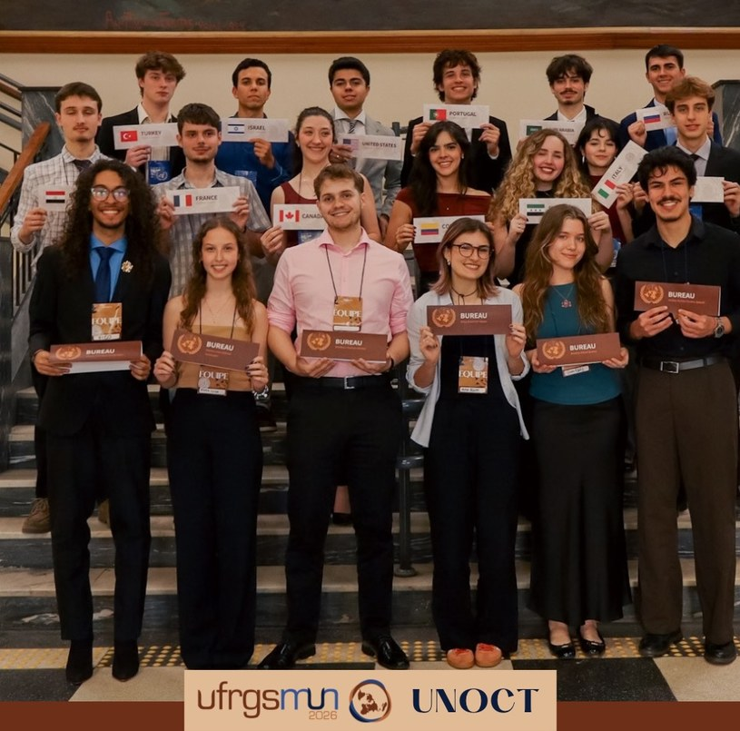

Aceleração de Hardware, HPC & Finanças Quantitativas
Trabalho para que redes neurais custem menos para rodar em hardware real, de CNNs em FPGAs a LLMs em várias GPUs, e pesquiso portfólios com ML para a bolsa brasileira.
Aberto aEngenharia de ML & Pesquisa em IA · Pesquisa Quantitativa · HPC

Trabalho atual
Pesquisa · UFRGS · desde 2026
Alternar kernels 3×3 e 2×2: 24% menos MACs, sem perda mensurável de acurácia
Estudo de tamanho de kernel com 152 execuções no Tiny ImageNet, além de detecção e segmentação no PASCAL VOC · FP32 → QAT → INT8 · roda no PCAD (Slurm)
Redes neurais conscientes de hardware: como restringir os kernels de CNNs aos tamanhos 2×2 e 3×3, que o hardware Winograd trata bem, afeta acurácia, eficiência e quantização INT8. Orientação do Prof. Mateus Grellert, do Grupo de Microeletrônica da UFRGS, cuja pesquisa se concentra em algoritmos e arquiteturas eficientes para aprendizado de máquina, e a quem este trabalho deve muito.
Contribuição & aprendizados
Como contribuoConduzo o estudo de tamanho de kernel de ponta a ponta no PCAD, o cluster de HPC da UFRGS, via Slurm: 152 execuções no estudo principal, além de rodadas de robustez e de híbridos no Tiny ImageNet e no PASCAL VOC, cada uma treinada em FP32, depois com quantização no treino (QAT) e por fim convertida para INT8.
O que estou aprendendoMedir o ruído entre sementes antes de confiar numa diferença: 2 pontos dizem pouco quando a semente sozinha move o resultado em 0,7. Além da parte técnica: manter organizado e reproduzível um estudo de 152 execuções e apresentar os resultados ao meu orientador com os seus limites, e não só as boas notícias.
Python
Deep Learning
Quantização
HPC
Colaboração de pesquisa · UFRGS · desde 2026
Winograd em 4 bits em FPGA: quatro produtos por DSP, 1,98× o throughput da versão de 8 bits
3.379 GOPS na VGG16 com 1.024 DSPs (ZCU104) · a rede de 4 bits que treinei: 68,51% de top-1 no ImageNet, 3,08 pontos abaixo do ponto flutuante
Aceleradores em Verilog para convolução 3×3 pelo algoritmo de Winograd (F(2,3), F(4,3), F(6,3); INT8 e 4 bits), projetados pelo meu colega de laboratório Thomas Schmitz; eu cuido do lado das redes e da acurácia. Coautor de um artigo convidado para o IEEE OJCAS, extensão do artigo do Thomas no SBCCI 2026 (em preparação), e de um artigo no ISCAS em avaliação.
Contribuição & aprendizados
Como contribuoAvalio as linhas de aceleradores do Thomas em 16 redes adaptadas para kernels 3×3 numa AMD Alveo U200: ciclos por simulação do netlist, Fmax e potência pelo Vivado e acurácia sob a aritmética do próprio acelerador. Para o artigo do OJCAS, treinei a rede de 4 bits direto no domínio de Winograd (escalas por filtro, três sementes), levei-a para o RTL com bias e revisei os números e o texto do artigo.
O que estou aprendendoGanho aritmético é um teto, não throughput: tiles maiores exigem dados mais largos e um timing mais difícil de fechar, e números de hardware só valem quando batem bit a bit com uma referência em software. Trabalhar no projeto de outra pessoa me ensinou a melhorá-lo sem mexer nele: medir pelo gate de testes dele, relatar o que quebra e deixar a decisão com quem projetou.
FPGA
Vivado
Winograd
Quantização
Projeto individual · desde 2025
Portfólios com ML para a B3, testados sem lookahead nem viés de sobrevivência
~10.000 tickers na meta de expansão para os EUA · alfa LightGBM → modelo de risco → otimizador com custos · contra BOVA11 e CDI
Pesquisa em machine learning para gestão de portfólio no mercado de ações brasileiro (B3): um pipeline de dados point-in-time e um estudo de construção de portfólio com LightGBM sob backtest walk-forward, agora com expansão para ações dos EUA.
Contribuição & aprendizados
Como contribuoConstruí todo o pipeline: preços, fundamentos da CVM com as datas reais de divulgação, empresas deslistadas para evitar viés de sobrevivência e dados macro; depois, um modelo de alfa com LightGBM, um modelo de risco e um otimizador que considera custos. Na expansão para os EUA, estou adicionando fundamentos do SEC EDGAR e dados macro do FRED, validados nas 500 maiores ações e escalando para ~10.000 tickers.
O que estou aprendendoUma configuração escolhida entre muitos backtests vale pouco até ser corrigida para testes múltiplos (um teste de Sharpe deflacionado me mostrou isso), e viés de sobrevivência e datas de divulgação importam tanto quanto o modelo. Tocar sozinho um projeto longo me ensinou autogestão: definir minhas próprias metas, mudar uma variável por experimento e ser meu próprio revisor, para que nenhuma camada entre antes de a de baixo superar seu baseline.
Python
LightGBM
Validação Walk-Forward
Otimização de Portfólio
Trajetória
Sou estudante de graduação em Engenharia de Computação na UFRGS, tendo estudado anteriormente Engenharia Elétrica na UFSC. Trabalho na interseção entre hardware e aprendizado de máquina: minha pesquisa atual aplica restrições conscientes de hardware — limitando os kernels convolucionais a 2×2 e 3×3 — para tornar redes neurais mais adequadas a aceleradores de hardware. Devo grande parte deste trabalho ao meu orientador, o Prof. Mateus Grellert, cuja orientação moldou a forma como faço pesquisa, e ao meu colega de laboratório Thomas Schmitz, cujos aceleradores Winograd são a base de parte do meu trabalho.
Fora do laboratório, desenvolvo pesquisa de portfólio com machine learning e infraestrutura de backtesting para o mercado de ações brasileiro (B3).
Na UFSC, construí um scanner 3D a laser para um projeto de ROV de inspeção submarina e participei da equipe da Shell Eco-marathon. Desde então, liderei uma equipe de três num desafio da IBM, desenvolvi uma previsão de queimadas no NASA Space Apps e, fora da engenharia, negociei políticas de combate ao terrorismo e cibersegurança no UFRGSMUN.
Scanner 3D a laser de baixo custo para inspeção submarina, do hardware à nuvem de pontos
Câmera, laser e espelho rotativo com encoder (Arduino) · extração subpixel da linha laser · modelo de profundidade com gradient boosting · ROV financiado pela FINEP na UFSC
O VORIS (Veículo Operado Remotamente para Inspeção Submarina) é um projeto financiado pela FINEP no Laboratório de Metrologia e Automatização da UFSC, com a Petrobras como interessada: um ROV com sistemas ópticos de medição 3D para estruturas submersas. Na minha iniciação científica, construí e avaliei sua bancada de triangulação a laser: uma câmera, um laser e um espelho rotativo que varrem a cena e a transformam em uma nuvem de pontos 3D.
Contribuição & aprendizados
Como contribuíConstruí o sistema de ponta a ponta: o hardware (um Arduino Uno R4 acionando um espelho com motor de passo lido por um encoder absoluto, controle do laser por PWM e captura de imagens sincronizada com o ângulo de varredura), a extração subpixel da linha laser por centroide ponderado pela intensidade (muito menos ruído que a limiarização), o modelo geométrico de triangulação (normalização da câmera, geometria câmera–laser e correção do ângulo do espelho), um modelo de regressão com gradient boosting treinado em varreduras rotuladas para corrigir erros sistemáticos de profundidade e uma interface gráfica para operar tudo.
O que aprendiUm modelo vale o que vale a sua calibração: a geometria foi precisa no centro do campo de visão, mas pequenos erros de calibração e do ângulo do laser cresceram em direção às bordas. Aprender esses erros a partir dos dados reduziu os artefatos ali, mas só até onde os dados de treino alcançavam, o que aponta para um modelo híbrido com a geometria como base. Numa equipe interdisciplinar e financiada, também aprendi a explicar meu subsistema para pessoas de outras áreas e a cumprir o cronograma do projeto.
A E3 (Equipe UFSC de Eficiência Energética) projeta, constrói e valida protótipos ultraeficientes a gasolina e elétricos para a Shell Eco-marathon. Trabalhei na engenharia do carro e participei de uma visita técnica à Nanopoxy, fabricante de resinas epóxi para compósitos.
Contribuição & aprendizados
Como contribuíTrabalhei principalmente na parte de engenharia do carro, incluindo trabalho prático com compósitos de fibra de carbono; participei de uma visita técnica à Nanopoxy, fabricante de resinas epóxi para compósitos — a mesma família de materiais usada no carro; e fiz o marketing da equipe, além de organizar a área de marketing.
O que aprendiComo fibra de carbono e resina epóxi se combinam em peças leves e rígidas e, na Nanopoxy, o que há por trás das próprias resinas. Organizar a área de marketing me ensinou a dividir tarefas entre colegas, definir prazos e acompanhar a execução; conciliá-la com a engenharia me ensinou a priorizar e a explicar o trabalho técnico para quem está fora da equipe.
Engenharia
Compósitos de Fibra de Carbono
Marketing
Trabalho em Equipe
Projetos
Hackathon · 2026 · NASA Space Apps
Prevê onde o Brasil vai queimar na próxima temporada, célula por célula
NASA FIRMS, MODIS + VIIRS unificados (2000–2026) · um modelo de razão simples venceu o desafiante de ML · certificado Galactic Problem Solver
Um app web que une as detecções de fogo do NASA FIRMS dos dois sensores de satélite em uma série consistente e a transforma em um calendário mensal de queimadas, com piloto em Rondônia e expansão para todos os estados do Brasil.
Contribuição & aprendizados
Como contribuíFui um dos dois principais desenvolvedores (67 commits). Construí as visões de temporada de fogo e “comparado com o usual”, a previsão da próxima temporada com chance de fogo por célula, o piloto nacional com malhas do IBGE e as ferramentas de campo (link compartilhável, “onde agir primeiro”, envio de área própria). Também testei um modelo de ML como desafiante, que não superou o método de razão mais simples, e escrevi os testes do pipeline.
O que aprendiDados de satélite precisam ser conciliados entre sensores antes de qualquer análise fazer sentido, e um baseline simples e explicável pode vencer o ML; relatar isso com honestidade faz parte do resultado. O hackathon me ensinou a programar sob pressão: cortar escopo cedo, entregar primeiro o essencial, dividir o trabalho com clareza com o outro desenvolvedor principal, revisar o código um do outro rápido e manter testes para que a pressa não quebre o que já funciona.
Python
JavaScript
NASA FIRMS
Geoespacial
Protótipo online · liderei a equipe de 3
Plano de conectividade ótimo dentro do orçamento para os 5.570 municípios do Brasil
VPL, payback e otimização de portfólio · explicações do IBM Granite conferidas contra os números · 230 testes automatizados
Sistema de apoio à decisão para o Desafio IBM SkillsBuild & Fundação Telefônica Vivo: prioriza municípios para expansão de conectividade com dados públicos (Anatel, IBGE, INEP), análise financeira, otimização de portfólio e um agente IBM Granite que explica cada recomendação.
Contribuição & aprendizados
Como contribuíLiderei a equipe de três que criou o projeto e fui responsável pelo motor de decisão: os scores de prioridade dos municípios, as distâncias ao backhaul, a ferramenta financeira (payback, VPL, sensibilidade), a otimização de portfólio com PuLP/CBC (IBM CPLEX opcional) e um backtest 2021→2025. Também liderei a integração: o backend em FastAPI, a conferência dos números dos textos do Granite contra o motor, a CI e o deploy.
O que aprendiA transformar uma pergunta de negócio em um modelo de otimização com restrições reais de orçamento, e por que a saída de um LLM precisa ser conferida contra os dados. Liderar a equipe me ensinou a atribuir responsabilidades de acordo com os pontos fortes de cada um, a combinar interfaces e dados simulados cedo para que dados, motor e interface avançassem em paralelo, a manter todos alinhados com o prazo e a tomar as decisões finais quando as partes precisavam se encaixar.
Python
FastAPI
Otimização
IBM watsonx
Benchmark concluído · equipe de 3
Entre nós, o tensor parallelism gastou até 97% do tempo de GPU em comunicação
Qwen2.5-7B em 1 a 4 GPUs · vLLM + Ray no PCAD, o cluster de HPC da UFRGS · conclusão: se o modelo cabe em uma GPU, não o divida
Trabalho da disciplina de Avaliação de Desempenho da UFRGS: avalia Tensor e Pipeline Parallelism na inferência de LLM (vLLM e Ray) no PCAD, o cluster de HPC da UFRGS.
Contribuição & aprendizados
Como contribuíFiquei com a parte de GPU e de rede da análise: telemetria de GPU (utilização, consumo de energia), medições de rede, os notebooks de análise estatística e os gráficos, os scripts de execução e os slides finais.
O que aprendiA planejar um experimento de desempenho com fatores e repetições, e como tensor e pipeline parallelism deslocam o gargalo entre computação e comunicação. Ser responsável por uma parte de um estudo em equipe me ensinou a combinar o plano antes de começar, a entregar dados que os outros pudessem usar direto e a planejar as execuções em torno da fila de um cluster de HPC compartilhado.
Python
vLLM
HPC
Protótipo concluído · individual
Organiza uma pasta bagunçada pelo significado, não pelo nome do arquivo
Embeddings de frases + KMeans · YAKE nomeia cada pasta · prévia (dry-run) antes de mover qualquer arquivo
Organizador de documentos com IA que usa embeddings de frases, extração de palavras-chave e clustering (KMeans) para agrupar arquivos por similaridade semântica.
Contribuição & aprendizados
Como contribuíDesenvolvi sozinho: extração de texto de PDF, DOCX, TXT e XML, transcrição de áudio offline com Vosk, embeddings de frases com KMeans, palavras-chave YAKE para nomear cada pasta e uma prévia (dry-run) antes de mover qualquer arquivo.
O que aprendiA aplicar NLP a arquivos reais e bagunçados, e que clusters não supervisionados só são úteis com rótulos legíveis. Construí-lo sozinho me ensinou a reduzir o escopo primeiro a um protótipo que funcione e a projetar pensando na confiança do usuário: uma ferramenta que move arquivos deve sempre mostrar uma prévia.
Python
NLP
Clustering
Projeto de disciplina · INF01202 · dupla
Um jogo arcade completo em C, com memória e arquivos gerenciados à mão
32 de 38 commits meus · Raylib · saves binários com ranking
Um Brick Breaker arcade desenvolvido em C com Raylib: movimentação por teclado, detecção de colisões, vidas, pontuação, power-ups e múltiplas fases carregadas de arquivos.
Contribuição & aprendizados
Como contribuíEscrevi a maior parte do código (32 de 38 commits): estados modulares do jogo, colisões, power-ups, fases carregadas de arquivos, saves binários com ranking, áudio e o HUD.
O que aprendiA estruturar um programa em C em módulos e a lidar com memória e arquivos manualmente. Trabalhar em dupla me ensinou a dividir o jogo em módulos que cada um pudesse assumir, a combinar as interfaces entre eles e a usar o Git para manter nosso trabalho sincronizado.
Pull request para um app open source de apoio à matrícula da UFRGS, com funcionalidades que senti falta usando o app como aluno.
Contribuição & aprendizados
Como contribuíAdicionei um assistente de IA para dúvidas sobre disciplinas e horários (restrito ao curso selecionado, com CORS/CSP e rate limit para produção), uma previsão de formatura com exportação em PDF, exportação do horário em .ics com comparação lado a lado, e configurei o Vitest com testes para os serviços principais.
O que aprendiA contribuir com o código de outra pessoa: seguir suas convenções, manter o pull request focado e explicar por que cada mudança importa para que o mantenedor possa revisá-lo rápido; e a escrever testes para código que não escrevi.
Vue
Vitest
Open Source
Atividades
Simulação da ONU · 2026 · em inglês
Negociei políticas de combate ao terrorismo e cibersegurança; escolhido pela imprensa para uma entrevista especial
Escritório da ONU de Combate ao Terrorismo · terrorismo no Sahel e ciberterrorismo · um dos quatro delegados entrevistados diante de toda a conferência
A simulação da ONU da UFRGS. Como delegado de Israel no Escritório da ONU de Combate ao Terrorismo (UNOCT), debati terrorismo no Sahel e ciberterrorismo em inglês, negociando com delegações cujas posições muitas vezes eram distantes da minha.
Contribuição & aprendizados

Como contribuíPara me preparar, acompanhei de perto os acontecimentos atuais, especialmente sobre ciberterrorismo e cibersegurança. No comitê, representei a posição de Israel e, nas negociações informais (caucuses) com outras delegações, busquei pontos em comum sobre medidas de combate ao terrorismo, formando alianças onde os interesses se encontravam e mantendo minha linha onde não se encontravam. A imprensa me escolheu como um dos quatro delegados para uma entrevista especial diante de todos os participantes, na qual defendi a posição da delegação e respondi a uma pergunta polêmica.
O que aprendiDiplomacia começa por ouvir: entender por que outra delegação defende sua posição é o que torna um acordo possível. Aprendi a trabalhar com pessoas cujas visões divergem muito das que eu representava, a negociar textos que vários lados pudessem aceitar, a colaborar em bloco por um texto comum e a manter a calma e a precisão ao defender uma posição difícil em público, em inglês. Também aprendi que uma posição só convence quando está atualizada: ameaças cibernéticas mudam rápido, então meus argumentos precisavam acompanhar as notícias mais recentes de cibersegurança e os debates sobre políticas públicas.
Diplomacia
Negociação
Oratória
Cibersegurança
Habilidades & contato
Habilidades
Sistemas & Aceleração
Python
C
C++
CUDA
Slurm (cluster PCAD)
ML & Dados
Python
Deep Learning
Aprendizado por Reforço
LightGBM
Visão Computacional
Engenharia de Software
React
TypeScript
JavaScript
Node.js
Express
Tailwind CSS
Firebase
Idiomas
Português (Nativo)
Inglês (Fluente)
Francês (Proficiente)
Espanhol (Proficiente)
Entre em contato
Vamos conversar.
Aberto aEngenharia de ML & Pesquisa em IA · Pesquisa Quantitativa · HPC
 Pesquisa · UFRGS · desde 2026
Pesquisa · UFRGS · desde 2026